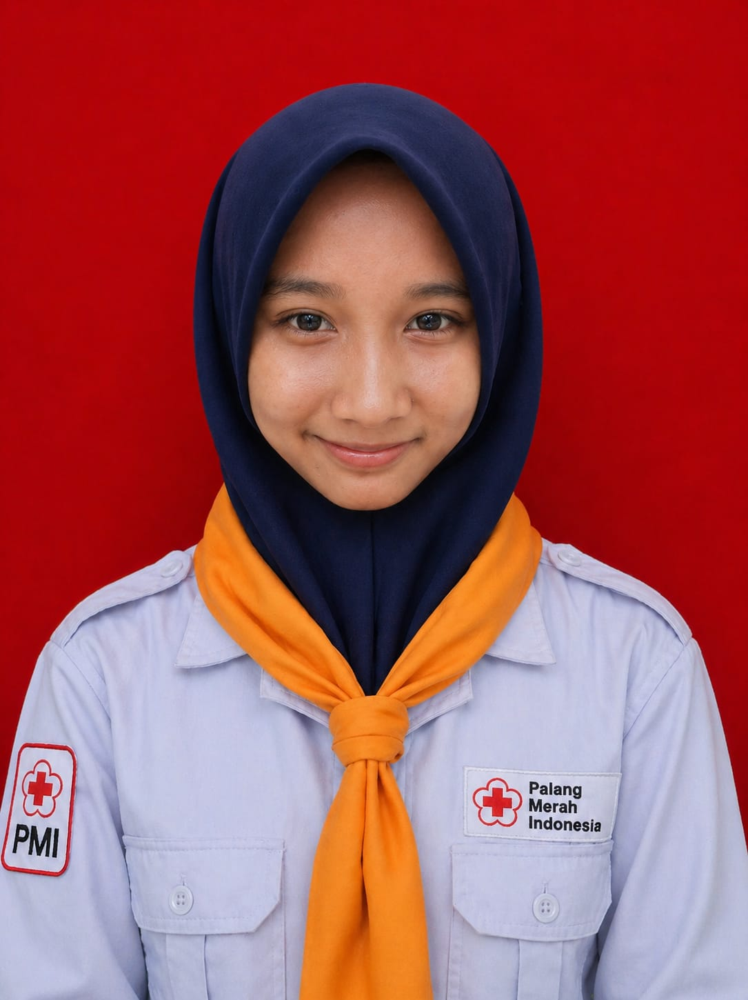

Visi PMR
Mewujudkan PMR sebagai wadah pengembangan diri yang mampu meningkatkan keterampilan komunikasi, kerja sama, kepedulian, dan keterampilan kepalangmerahan bagi setiap anggota.
Bergerak dengan hati, menolong dengan aksi, dan menumbuhkan kepedulian untuk sesama.
Ruang bagi remaja untuk belajar, tumbuh, dan mengabdi melalui kegiatan kemanusiaan.

Palang Merah Remaja (PMR) adalah wadah pembinaan generasi muda di lingkungan Palang Merah Indonesia.
Melalui kegiatan PMR, siswa belajar tentang kepedulian, kesehatan, kerja sama, dan nilai-nilai kemanusiaan.
Anggota PMR juga dapat mengembangkan keterampilan pertolongan pertama, mengikuti latihan rutin, serta terlibat dalam kegiatan sosial.
Mewujudkan PMR sebagai wadah pengembangan diri yang mampu meningkatkan keterampilan komunikasi, kerja sama, kepedulian, dan keterampilan kepalangmerahan bagi setiap anggota.
Kenali orang-orang yang bekerja sama menjalankan kegiatan PMR.



Belajar melalui kegiatan yang membangun keterampilan dan kepedulian.
Membangun kepedulian melalui kegiatan sosial di sekolah.
Lihat Foto & Detail →
Mengikuti materi dan praktik untuk mengembangkan kemampuan anggota.
Lihat Foto & Detail →
Belajar bersama anggota PMR dari sekolah lain.
Lihat Foto & Detail →
Informasi dan cerita seputar kegiatan PMR.
Borong Sembilan Penghargaan, PMR Wira SMKN 1 Adiwerna Raih Prestasi Gemilang Sepanjang 2024
Baca Selengkapnya →Meningkatkan keterampilan dan sinergi bersama adik-adik PMR Madya.
Baca Selengkapnya →PMR Wira mengunjungi panti asuhan sebagai bentuk kemanusiaan.
Baca Selengkapnya →Mengabadikan pencapaian dan pengalaman kompetisi anggota PMR.